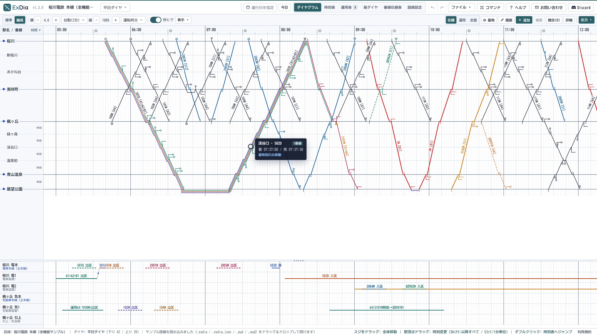

Web 〜 全エディション標準
1,200本超でも60fpsで軽快なスジ編集と .exdia 圧縮
15MB級の大規模 .oud2 も .exdia 形式で自動圧縮し、幹線の過密ダイヤも60fpsで滑らかに操作できます。
.oud/.oud2の自動文字コード判定読込・書出- 秒ヒゲ・番線在線表示・当駅始発/直通の右クリック切替
- 単線・複線・複々線・分岐・環状線の競合自動検出

スジ編集・ダイヤグラム表示